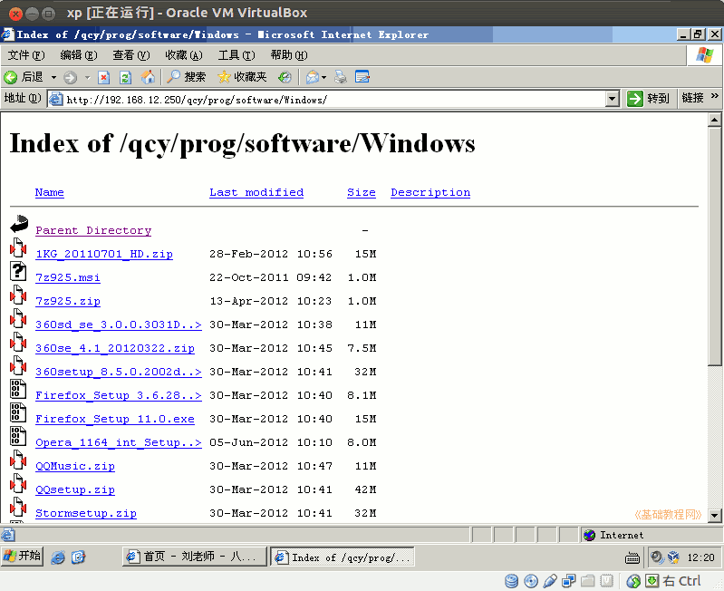

2011-2012 第二学期九年级系统安装教学设计
作者：TeliuTe 来源：基础教程网
六、学会安装软件 返回目录 下一课
（一）教学设计
1、学习目标：学会安装软件
2、注意事项：下载 Windows版本的
3、教学过程：
1）教师准备学案和板书；
2）学生整队进入，开机抄黑板上笔记；
3）教师讲解板书演示操作；
4）学生打指法、日志、完成操作；
5）教师打勾记录学生指法成绩，检查日志和操作；
注：学生抄完笔记就开始打指法、日志，老师讲完后再继续完成；
（二）板书设计(学生笔记)
第6课 学会安装软件
1、下载软件，看文化名缩写
2、打开、安装，注意打勾广告
3、装完设置一下
4、选择合适的版本，xp，正式版
操作图示：

（三）课后记 2012-03-30 17:23
先在校园网里找个目录下把软件都放进去，
然后在httpd.conf里设置允许浏览这个目录
--
要求安装好火狐和搜狗输入法，其他的自己看着装即可
大多数会把QQ装上，后面开开网络自己试一下
--
提前先讲好，卡住的问题主要是上节没完成
挨老师训的话也别吭声，这样后面碰到 问题就知道自己想法解决了
--
开开虚拟机，讲一下黑板上的内容
其实没什么好讲的，把要用到的讲一下
--
上网的代理改成10了，以前用是250的，
相互指导一下都可以上去 ，QQ和火狐是两个概念
--
早上1班的把cs1.6拷进去了，可是不会用共享文件夹
普通用户没有添加到vbox里，去操作一下还是有些复杂建共享
--
放心大胆的就是了，这个是虚拟机倒了再建一个也可以
鼓励学生多练习，自己安装 软件
--
学习设置软件，把火狐和其他软件的设置讲一下
还有卸载应用程序，内容上应该不用发愁，有很多可以讲的
--
早上数学老师来占课坚决不给，主要是占了没法补
不为中考就是要自己上得顺心，不能弄乱了正常的秩序
--
Flashplayer忘记了，这个要独立安装才好
网上下的是个安装器，还得去下载
--
返回目录 下一课
本教程由86团学校TeliuTe制作|著作权所有
基础教程网：http://teliute.org/
美丽的校园……
转载和引用本站内容，请保留作者和本站链接。